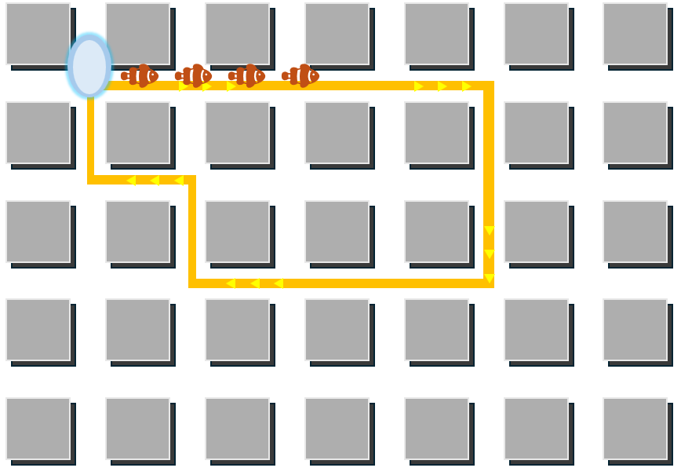
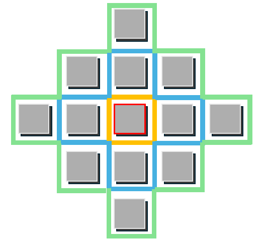
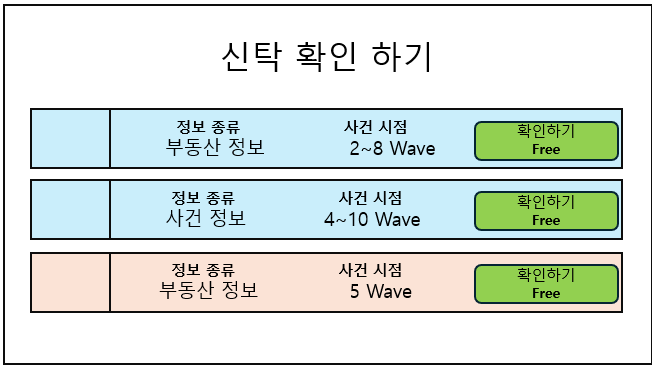
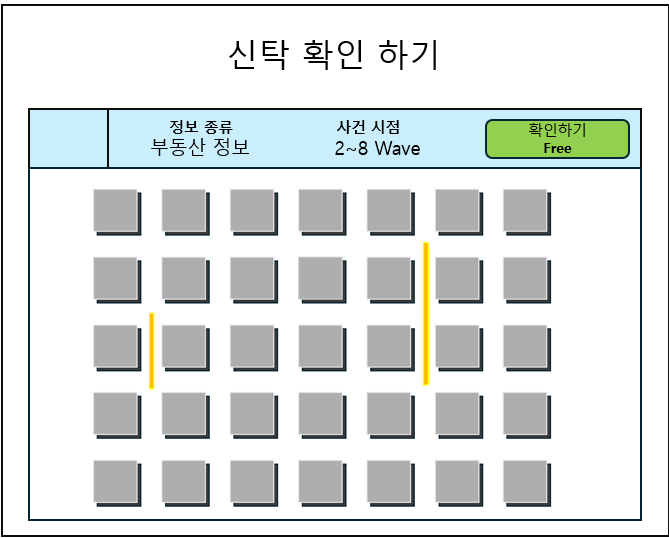
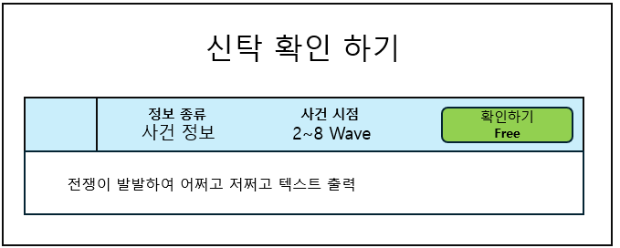

| A | B | C | D | E | F | G | H | I | J | K | L | M | N | O | P | Q | R | S | T | U | V | W | X | Y | Z | |
|---|---|---|---|---|---|---|---|---|---|---|---|---|---|---|---|---|---|---|---|---|---|---|---|---|---|---|
1 | ||||||||||||||||||||||||||
2 | 1. 타일맵 & 몬스터 경로 | |||||||||||||||||||||||||
3 | A. 기본 맵 형태 및 몬스터 경로 개요 | |||||||||||||||||||||||||
4 | - 타일맵 형태로 되어있지만 각 타일 사이의 간격이 벌어져있고 사이로 몬스터가 지나다닐 수 있는 구조 | |||||||||||||||||||||||||
5 | - 타일맵의 사이 선이 몬스터의 이동 경로로 사용되고, 모든 몬스터 경로는 순환 구조로 입구로 몬스터가 다시 돌아온다. | |||||||||||||||||||||||||
6 | * 예시 이미지 | |||||||||||||||||||||||||
7 |  | |||||||||||||||||||||||||
8 | ||||||||||||||||||||||||||
9 | ||||||||||||||||||||||||||
10 | ||||||||||||||||||||||||||
11 | ||||||||||||||||||||||||||
12 | ||||||||||||||||||||||||||
13 | ||||||||||||||||||||||||||
14 | ||||||||||||||||||||||||||
15 | ||||||||||||||||||||||||||
16 | ||||||||||||||||||||||||||
17 | ||||||||||||||||||||||||||
18 | ||||||||||||||||||||||||||
19 | ||||||||||||||||||||||||||
20 | ||||||||||||||||||||||||||
21 | ||||||||||||||||||||||||||
22 | B. 타일 상세 사양 | |||||||||||||||||||||||||
23 | 1) 보유 여부에 따른 타일 구분 | |||||||||||||||||||||||||
24 | - 유저가 재화를 통해서 구매한 타일을 표시한다. | |||||||||||||||||||||||||
25 | - 구매한 타일 위에만 보유한 신을 배치할 수 있다. | |||||||||||||||||||||||||
26 | - 타일의 가격은 경로의 변경에 따라 변경된다. | |||||||||||||||||||||||||
27 | 상태 | 예시 이미지 | 클릭 시 동작 | UI 버튼 클릭 시 동작 | ||||||||||||||||||||||
28 | 보유 | 타일 판매 가격 정보 출력 | 타일 미보유 상태로 변경 | |||||||||||||||||||||||
29 | 타일 판매 UI 출력 | 현재 가격과 동일한 수량의 재화 획득 | ||||||||||||||||||||||||
30 | ||||||||||||||||||||||||||
31 | 미보유 | 타일 판매 가격 정보 출력 | 보유 재화 > 구매 재화일 경우에만 동작 | |||||||||||||||||||||||
32 | 타일 판매 UI 출력 | 타일 미보유 상태로 변경 | ||||||||||||||||||||||||
33 | 현재 가격과 동일한 수량의 재화 획득 | |||||||||||||||||||||||||
34 | ||||||||||||||||||||||||||
35 | 2) 타일 구매 가격 산정 방식 | |||||||||||||||||||||||||
36 | - 타일 주변에 인접한 몬스터 경로가 많을 수록 높은 가격으로 책정된다. | 이동 경로 카운트 참고 이미지 | ||||||||||||||||||||||||
37 | - 경로 시작점과 가까울수록 높은 가격으로 책정된다. |  | ||||||||||||||||||||||||
38 | - 타일 경로 배치에 따른 가격 선정 공식 | |||||||||||||||||||||||||
39 | 최종 공식 예시 | 100W + 100/S + 6A + 3B + C | ||||||||||||||||||||||||
40 | W | 현재 진행중인 웨이브 | ||||||||||||||||||||||||
41 | S | 시작점과의 거리 (시작점과 타일 중앙과의 직선 거리를 계산) | ||||||||||||||||||||||||
42 | A | 타일과 닿아있는 4 경로중 몬스터 이동 경로 보유 수량 | ||||||||||||||||||||||||
43 | B | 타일 주변 5칸 묶음과 닿아있는 몬스터 이동 경로 보유 수량 | ||||||||||||||||||||||||
44 | C | 타일 주변 13칸 묶음과과 닿아있는 몬스터 이동 경로 보유 수량 | ||||||||||||||||||||||||
45 | * 최종 공식의 각 상수(예시 식의 100 / 6 / 3 / 1)는 테이블로 관리 | |||||||||||||||||||||||||
46 | ||||||||||||||||||||||||||
47 | 3) 타일 판매 가격 산정 방식 | |||||||||||||||||||||||||
48 | - 타일 구매 가격 * ((50+(10*타일 보유 Wave(Max5))/100) | |||||||||||||||||||||||||
49 | ||||||||||||||||||||||||||
50 | ||||||||||||||||||||||||||
51 | C. 몬스터 경로 지정 방식 | |||||||||||||||||||||||||
52 | 1) 최초 경로 지정 방식 | |||||||||||||||||||||||||
53 | No. | Title | 설명 | |||||||||||||||||||||||
54 | 1 | 시작점 지정 | 타일의 교차점을 좌표로 보고 랜덤한 지점을 지정 | |||||||||||||||||||||||
55 | 2 | 경로 길이 지정 | 타일 1칸의 길이를 기준으로 선분을 1로 두고 경로 길이를 몇으로 할지를 지정 (짝수로만 설정 필요) / 최초에만 경로 길이 기준으로 설정하고 이후에는 경로 길이 변경되어도 괜찮 | |||||||||||||||||||||||
56 | 3 | 경로 설정 | 시작점으로 지정된 좌표를 (x, y)로 두었을때 아래의 규칙으로 다음 방향을 설정 | |||||||||||||||||||||||
57 | 1 | 현재 꼭지점에서 이동할 수 있는 상, 하, 좌, 우 방향의 후보 계산후 이동 | ||||||||||||||||||||||||
58 | 1 | 방향의 탐색 순서는 탐색 시점마다 랜덤하게 설정 | ||||||||||||||||||||||||
59 | 2 | 목표 좌표에서 시작점까지의 최단 거리(이미 방문한 좌표를 방문하는 경우를 제외) > 남은 이동 가능 거리인 방향인 경우 선택지 제외 | ||||||||||||||||||||||||
60 | 3 | 남은 이동 거리가 2개 이상인데 목표좌표가 시작지점인 경우 선택지에서 제외 | ||||||||||||||||||||||||
61 | 4 | 목표 좌표가 경로 중에 방문된 좌표인 경우 선택지에서 제외 | ||||||||||||||||||||||||
62 | 2 | 1번을 반복하며 경로를 그려가다가 남은 선분 개수가 1이고 목표 좌표가 시작 좌표와 동일한 경우에 경로 선정 종료 | ||||||||||||||||||||||||
63 | 4 | 방향 설정 | 시작점에서 시계 방향으로 몬스터가 이동한다. | |||||||||||||||||||||||
64 | ||||||||||||||||||||||||||
65 | ||||||||||||||||||||||||||
66 | 2) 5웨이브 마다 경로와 스타트 지점이 이동하는 방식 | |||||||||||||||||||||||||
67 | No. | 설명 | ||||||||||||||||||||||||
68 | 1 | 경로 내의 타일리스트 체크 | ||||||||||||||||||||||||
69 | 2 | 경로 내의 타일 중 1~3개의 타일 선정 후 타일리스트에서 제거 | 타일 선정 개수 테이블 관리 필요 (min / max 값 지정 후 범위내에서 랜덤 하게 설정) | |||||||||||||||||||||||
70 | 1 | 경로 바깥과 닿아 있는 타일 중에서 선정한다. | ||||||||||||||||||||||||
71 | 2 | 현재 시작점과 닿아있는 타일 중에는 선정하지 않는다. | ||||||||||||||||||||||||
72 | 3 | 경로 바깥의 타일 중 1~3개의 타일 선정 후 타일리스트에 포함 | ||||||||||||||||||||||||
73 | 1 | 타일리스트의 타일과 닿아있는 타일 중에서 선정한다. | ||||||||||||||||||||||||
74 | 2 | 2번에서 제거된 타일은 선정하지 않는다. | ||||||||||||||||||||||||
75 | 3 | 현재 시작점과 닿아있는 타일 중에는 선정하지 않는다. | ||||||||||||||||||||||||
76 | 4 | 생성된 타일 리스트 모양에 아래와 같은 문제가 있는지 확인 | ||||||||||||||||||||||||
77 | 1 | 지형 단절 체크 : 타일 덩어리가 연결된 한 덩어리인지 확인하여 아닌 경우 초기화 후 1번부터 다시 시행 | ||||||||||||||||||||||||
78 | 2 | 구명 지형 체크 : 내부에 빈 구멍이 생기는 케이스인지 확인하여 맞는 경우 초기화 후 1번부터 다시 시행 | ||||||||||||||||||||||||
79 | 5 | 타일리스트를 둘러싸는 경로를 연결한다. | ||||||||||||||||||||||||
80 | 6 | 시작점을 생성된 경로위의 좌표 중 기존 시작점에서 1~2칸 이동한 랜덤한 위치로 이동한다. | ||||||||||||||||||||||||
81 | * 플레이 중 경로가 바뀌는 케이스에서는 타일 덩이의 형태를 규정하고 외곽선을 그리는 방식으로 작업 | |||||||||||||||||||||||||
82 | * 새로 생성된 경로 바깥의 몬스터는 가장 가까운 경로위로 이동한다. | |||||||||||||||||||||||||
83 | ||||||||||||||||||||||||||
84 | 2. 몬스터 생성 및 웨이브 진행 | |||||||||||||||||||||||||
85 | A. 기본 웨이브 진행 개요 | |||||||||||||||||||||||||
86 | 1) 시간 제한형 웨이브: 인게임 플레이 시작 후 필드 내 몬스터 전멸 여부와 관계없이, 정해진 초(WaveTime)마다 강제로 다음 웨이브가 밀려오는 구조 | |||||||||||||||||||||||||
87 | 2) 몬스터 소환: 웨이브가 시작되면 지정된 난이도 밸런스에 따라 '시작점'에서 몬스터가 순차적으로 스폰됩니다. | |||||||||||||||||||||||||
88 | 3) 몬스터 이동: 소환된 몬스터는 테이블에 정의된 베이스 스탯(체력, 속도 등)을 기준으로 생성되며, 시작점을 기준으로 경로를 시계 방향으로 무한 순환합니다. | |||||||||||||||||||||||||
89 | - 몬스터가 시작점을 통과할때 최대 채력의 10%가 회복된다. | |||||||||||||||||||||||||
90 | 4) 웨이브 전환: 웨이브 유지 시간이 종료(Time-out)되면 즉시 다음 웨이브 스케줄로 전환되며, 새로운 웨이브 설정에 따라 시작점에서 몬스터가 다시 소환됩니다. | |||||||||||||||||||||||||
91 | 5) 보스 웨이브: 5웨이브 주기로 보스가 등장하며, 보스는 고유한 특별 스킬을 보유하고 있습니다. | |||||||||||||||||||||||||
92 | 6) 게임오버 조건 | |||||||||||||||||||||||||
93 | - 상시 적용 : 필드 위에 존재하는 총 몬스터 수가 지정된 한계치(OverMonsterCount)를 초과 | |||||||||||||||||||||||||
94 | - 보스 웨이브 적용 : 웨이브 시간내에 보스 몬스터를 처치하지 못하는 경우 | |||||||||||||||||||||||||
95 | B. 모드 관리 | |||||||||||||||||||||||||
96 | 1) 난이도에 따라 모드 데이터를 별도로 관리한다. | |||||||||||||||||||||||||
97 | 2) 해당 내용인 아웃게임에서 지정하고 인게임 진입 이후에는 변경되지 않는다. | |||||||||||||||||||||||||
98 | 3) 웨이브 길이/ 모드명 / 사용할 난이도 파일 / 설정 | |||||||||||||||||||||||||
99 | 4) 테이블 상세 정보는 "모드" 시트 참고 | |||||||||||||||||||||||||
100 | ||||||||||||||||||||||||||
101 | C. 웨이브 관리 | |||||||||||||||||||||||||
102 | 1) 모드별 사용될 웨이브에 대한 데이터를 관리한다. | |||||||||||||||||||||||||
103 | 2) 파일명은 Wave{모드명}.csv 형태로 내부 구조를 사용한다. | |||||||||||||||||||||||||
104 | 3) 웨이브 별 베이스 HP, 이동속도, 저항력, 몬스터 지급 재화 등의 정보 사용 | |||||||||||||||||||||||||
105 | 4) 웨이브 별 등장 몬스터, 몬스터 등장 간격등의 값 조정 | |||||||||||||||||||||||||
106 | 5) 테이블 상세 정보는 "웨이브" 시트 참고 | |||||||||||||||||||||||||
107 | ||||||||||||||||||||||||||
108 | D. 몬스터 관리 | |||||||||||||||||||||||||
109 | 1) 각 몬스터별로 베이스 HP, 이동 속도, 저항력 몇%의 값을 가지는지에 대한 스탯 정보 추가 | |||||||||||||||||||||||||
110 | 2) 특성 타입을 지정해두고 각 몬스터별 특성을 적용 (ex : 공중을 나는 유닛, 등...) | |||||||||||||||||||||||||
111 | 3) 몬스터 스킬 정보를 사용하여 사용하는 스킬에 대한 정보 추가 | |||||||||||||||||||||||||
112 | ( 해당 내용은 추후 프로토 타입 이후에 추가) | |||||||||||||||||||||||||
113 | 5) 테이블 상세 정보는 "몬스터" 시트 참고 | |||||||||||||||||||||||||
114 | ||||||||||||||||||||||||||
115 | E. 몬스터 스탯 상세 사양 | |||||||||||||||||||||||||
116 | 스탯명 | 설명 | 수식 | |||||||||||||||||||||||
117 | HP | 몬스터의 체력 0이하로 떨어지면 몬스터 사망 | Round(Wave.BaseHp * (Monster.HpRate/100)) | |||||||||||||||||||||||
118 | Speed | 몬스터가 1칸(타일1개의 1개 선분 길이)를 이동하는데 걸리는 시간(s) *100 | Speed 값 : Round(Wave.BaseSpeed * (Monster.SpeedRate/100)) | |||||||||||||||||||||||
119 | ex) Speed 값이 10인 경우 : 1칸을 0.1초에 통과 | 1칸 이동에 걸리는 실제 시간 : Speed값 /100 | ||||||||||||||||||||||||
120 | Resist | 몬스터가 이동속도 감소, 스턴에 걸렸을때, 실제로 적용되는 비율(%) | Round(Wave.BaseResist * (Monster.ResistRate/100)) | |||||||||||||||||||||||
121 | ex) Resist값이 80인 경우 이동 속도 감소, 스턴 적용 시간의 80%만 적용 | |||||||||||||||||||||||||
122 | RewardAmount | 몬스터 처치시 지급되는 재화량 | Round(Wave.BaseAmount * (Monster.ResistAmount/100)) | |||||||||||||||||||||||
123 | ex) 10일 경우 처치 시마다 재화 10 제공 | |||||||||||||||||||||||||
124 | ||||||||||||||||||||||||||
125 | 3. 신(타워) 정보 | |||||||||||||||||||||||||
126 | A. 기본 개요 | |||||||||||||||||||||||||
127 | 1) 보유한 신은 내가 구매한 타일위에 자유롭게 배치할 수 있다. | |||||||||||||||||||||||||
128 | 2) 신은 공격력과 비례한 기본 공격을 사용한다. | |||||||||||||||||||||||||
129 | 3) 신은 보유 주수에 따라 공격력 스탯만 변경되며 수식은 아래와 같다 | |||||||||||||||||||||||||
130 | 현재 공격력 = 공격력 * 보유 주식 수 * (현재가격/BasePrice) | |||||||||||||||||||||||||
131 | ||||||||||||||||||||||||||
132 | 4. 신탁 및 하계 현황 | |||||||||||||||||||||||||
133 | A. 하계 현황 개요 | |||||||||||||||||||||||||
134 | 1) 현재 포함된 신들의 가격의 상승과 하락을 하계 현황에 따라서 결정한다. | |||||||||||||||||||||||||
135 | 2) 웨이브 단위로 다양한 하계 현황이 업데이트되고, 업데이트가 되면 신들의 가격이 반영된다. | |||||||||||||||||||||||||
136 | 3) 웨이브 시작 전에 랜덤한 범위 내에서 하계 점수 리스트의 점수가 설정된다. | |||||||||||||||||||||||||
137 | 4) 현재 진행하는 판에서 진행될 하계의 현황(사건)은 게임이 시작되기 전에 미리 모두 결정된다. (신들의 가격은 사건 발생시 계산한다.) | |||||||||||||||||||||||||
138 | ||||||||||||||||||||||||||
139 | B. 사건 리스트 | |||||||||||||||||||||||||
140 | 1) 하계 현황에서 등장 가능한 사건 리스트들을 정리한다. | |||||||||||||||||||||||||
141 | 2) 사건이 일어날 확률과 관련된 하계 점수를 정의한다. | |||||||||||||||||||||||||
142 | 3) 사건을 통해서 변경되는 하계 점수 리스트를 정의한다. | |||||||||||||||||||||||||
143 | 4) 사건을 통해서 변경되는 신들의 점수 리스트를 정의한다. | |||||||||||||||||||||||||
144 | 5) 예시 테이블은 "사건" 시트 참고 | |||||||||||||||||||||||||
145 | ||||||||||||||||||||||||||
146 | C. 하계 점수 리스트 | |||||||||||||||||||||||||
147 | 1) 사건에 따라 변동이 되는 하계 점수의 리스트를 정리한다. | |||||||||||||||||||||||||
148 | 예시 점수 항목 | |||||||||||||||||||||||||
149 | 전쟁 | 전쟁 점수가 증가할수록 기술점수가 올라가지만 풍요 점수와 인류의 수가 감소 | ||||||||||||||||||||||||
150 | 풍요 | 풍요 점수가 증가할수록 전쟁 기술점수가 올라가고, 신앙 점수가 감소하고 인류의 수가 증가 | ||||||||||||||||||||||||
151 | 기술 | 기술과 관련된 사건이 발생할때마다 신앙이 감소하며 풍요 점수가 증가합니다. | ||||||||||||||||||||||||
152 | 인류의 수 | 상승 시 모든 신들의 가격이 증가하고 전쟁 점수가 증가합니다.(통화량 증가) 하락시 마찬가지로 모든 신들의 가격이 하락합니다. | ||||||||||||||||||||||||
153 | 신앙 | 상승 시 모든 신들의 가격이 증가하고 기술 점수가 감소합니다.(통화량 증가) 하락시 마찬가지로 모든 신들의 가격이 하락합니다. | ||||||||||||||||||||||||
154 | 2) 하계 점수 항목은 다음에 생성될 사건의 종류와 신들의 가격에 영향을 미친다. | |||||||||||||||||||||||||
155 | 3) 예시 테이블은 "점수" 시트 참고 | |||||||||||||||||||||||||
156 | ||||||||||||||||||||||||||
157 | D. 게임 시작 시 진행 플로우 | |||||||||||||||||||||||||
158 | 1) 시작 시 각 하계 점수 항목을 지정된 범위내의 랜덤한 점수로 지정한다. | |||||||||||||||||||||||||
159 | 2) 하계 점수 항목에 따라서 1웨이브 사건을 생성한다. | |||||||||||||||||||||||||
160 | a. 클리어 까지 진행할 웨이브에 생성될 사건의 개수를 랜덤하게 지정 : WaveEventMax, WaveEventMin 값 내에서 지정(모드) | |||||||||||||||||||||||||
161 | b. 사건 리스트 중 1종의 사건을 선정 | |||||||||||||||||||||||||
162 | 선정 방식 : | |||||||||||||||||||||||||
163 | - 개별 사건 가중치 점수 / 사건 가중치 합산 의 확률로 각 사건을 확률로 잡아 1개의 랜덤한 사건을 선택 | |||||||||||||||||||||||||
164 | - 한 웨이브 내에 중복된 사건은 발생하지 않음 | |||||||||||||||||||||||||
165 | c. 해당 사건으로 발생되는 점수 변경과 발생된 사건 정보를 저장 | |||||||||||||||||||||||||
166 | d. 위 절차를 모든 웨이브의 사건을 생성할때까지 반복한다. | |||||||||||||||||||||||||
167 | ||||||||||||||||||||||||||
168 | E. 웨이브 진행 시 계산 플로우 | |||||||||||||||||||||||||
169 | 1) 웨이브 진행 시간 / 웨이브에 일어난 사건 수 만큼의 초를 구한다. | |||||||||||||||||||||||||
170 | 2) 웨이브 시작과 동시에 웨이브 첫번째 사건이 발생하고, 그에 따라 점수와 신의 가격이 변동된 것을 반영한다. | |||||||||||||||||||||||||
171 | 3) 1에서 구한 만큼의 시간이 흐르면 다음 사건이 발생한다. 이 것을 웨이브 내의 모든 사건이 발생할때 까지 반복한다. | |||||||||||||||||||||||||
172 | ||||||||||||||||||||||||||
173 | F. 사건 등장 확률 계산 방식 | |||||||||||||||||||||||||
174 | 순서 | 제목 | 설명 | 참고 컬럼 | ||||||||||||||||||||||
175 | 1 | 제외 항목 체크 | 현제 점수를 기준으로 등장할 수 없는 사건들을 제외한 사건 리스트 정리 | 사건의 ConditionWSId / ConditionWSOp / ConditionWSValue | ||||||||||||||||||||||
176 | 2 | 등장할 수 있는 모든 사건의 점수에 따른 가중치 계산 | 현재 점수와 사건의 BaseWeight를 기준으로 가중치 값 계산 계산식 (음수인 경우 0으로 처리) BaseWeight + WS01의 현재 Value값*Value01 + WS02의 현재 Value값*Value02 | 사건의 Baseweight / CauseWSId01 / CauseValue01 / CauseWSId02 / CauseValue02 | ||||||||||||||||||||||
177 | 3 | 사건 별 등장 확률 설정 | 등장할 수 있는 모든 사건의 가중치 값을 기준으로 개별 사건의 확률 계산 계산식 (동일 웨이브 내에 동일사건 포함 불가 처리 필요) - 사건의 가중치 / 리스트에 포함된 모든 사건의 가중치 합 = 개별 사건 등장 확률 | 사건의 Baseweight / CauseWSId01 / CauseValue01 / CauseWSId02 / CauseValue02 | ||||||||||||||||||||||
178 | ||||||||||||||||||||||||||
179 | G. 사건 시행에 따른 점수 계산 방식 | |||||||||||||||||||||||||
180 | 순서 | 제목 | 설명 | 참고 컬럼 | ||||||||||||||||||||||
181 | 1 | 사건의 점수 변동 체크 | 시행된 사건들의 점수 변경 관련 사항 체크 | 사건의 EffectWSId / EffectWSValue | ||||||||||||||||||||||
182 | 2 | 벨류값 바탕으로 점수 계산 | 현재 점수 * (100+벨류값)/100 | |||||||||||||||||||||||
183 | 3 | Min / Max 값 맞춤 | 계산된 점수가 Min/ Max 값보다 크거나 작으면 Min / Max 값으로 설정 | |||||||||||||||||||||||
184 | ||||||||||||||||||||||||||
185 | H. 신탁 선택 | |||||||||||||||||||||||||
186 |  | |||||||||||||||||||||||||
187 | 1) 매 웨이브 시작 시 마다 유저는 신탁을 제공받을 수 있다. | |||||||||||||||||||||||||
188 | 2) 처음으로 제공받는 신탁은 무료 / 추가로 신탁을 확인하려면 향화를 통해서 신탁을 확인해야한다. | |||||||||||||||||||||||||
189 | 2) 신탁은 크게 등급 구분으로 3가지, 종류 구분으로 2가지가 제공된다. | |||||||||||||||||||||||||
190 | 3) 종류 구분 | |||||||||||||||||||||||||
191 | 순서 | 제목 | 예시 이미지 | 설명 | ||||||||||||||||||||||
192 | 1 | 부동상 정보 |  | 지정된 시점의 몬스터 경로 정보를 확인할 수 있다. 모든 경로가 아닌 지정된 숫자의 경로를 제공한다. (3~5) | ||||||||||||||||||||||
193 | 2 | 사건 정보 |  | 지정된 시점에 일어나는 사건중 1개의 정보를 제공한다. | ||||||||||||||||||||||
194 | 4) 등급 구분 | |||||||||||||||||||||||||
195 | 순서 | 제목 | 설명 | |||||||||||||||||||||||
196 | 1 | 일반 | 일어나는 시점의 범위가 넓은 사건(언제 일어나는지 정확도 낮음) | |||||||||||||||||||||||
197 | 2 | 레어 | 일어나는 시점의 범위가 중간인 사건(언제 일어나는지 정확도 중간) | |||||||||||||||||||||||
198 | 3 | 유니크 | 일어나는 시점의 범위가 정확한 사건(언제 일어나는지 정확한 웨이브 정보 확인) | |||||||||||||||||||||||
199 | ||||||||||||||||||||||||||
200 | 5. 신 판매 가격 계산 방식 | |||||||||||||||||||||||||
201 | A. 첫 가격 설정 방식 | |||||||||||||||||||||||||
202 | 순서 | 제목 | 설명 | 참고 컬럼 | ||||||||||||||||||||||
203 | 1 | 신의 정보 가져오기 | 신의 BasePrice / CoreWs / CoreWsCorrelation 값 가져오기 | |||||||||||||||||||||||
204 | 2 | 점수의 정보를 바탕으로 초기 배율 값 계산 | 인구수와 신앙 점수 값 바탕으로 초기 배율 값 계산 M = (현재 인구수 / 기준 인구수) * (초기 신앙값 / 기준 신앙값) | ID 4 / 5번 값 | ||||||||||||||||||||||
205 | 3 | WS에 따른 첫 가격 설정 | CoreWsCollelation = 0 - BasePrice X (100 + CoreWs현재값 - CoreWs중간값)/100 X M CoreWsCollelation = 1 - BasePrice X (100 - CoreWs현재값 + CoreWs중간값)/100 X M | 신의 BasePrice / CoreWSID / WSCorrelation 점수의 Id /MinValue /MaxValue Id 1~3만 코어 Id로 사용 | ||||||||||||||||||||||
206 | ||||||||||||||||||||||||||
207 | B. 사건 시행에 따른 가격 설정 방식 | |||||||||||||||||||||||||
208 | 순서 | 제목 | 설명 | 참고 컬럼 | ||||||||||||||||||||||
209 | 1 | 현재 가격 확인 | 현재 해당 신의 판매 가격 = A | |||||||||||||||||||||||
210 | 2 | 일어난 사건 확인 | 일어난 사건 중 내 신의 점수에 영향을 주는 사건이 일어났는지 확인 | EffectGodGroup01[] EffectGodGroup02[] EffectGodGroup03[] | ||||||||||||||||||||||
211 | 3 | 영향을 주는 사건의 그룹에 따른 벨류값 확인 | 영향이 있는 경우 영향 Value 값 확인 = C * 영향이 없는 경우 C = 0 | EffectGodValue01 EffectGodValue02 EffectGodValue03 | ||||||||||||||||||||||
212 | 4 | CoreWsId의 현재 값 확인 | 각 신별 코어 점수 ID 값의 현재값 = B 긍정 / 부정을 확인 | |||||||||||||||||||||||
213 | 5 | CoreWs 변수값 계산 | CoreWs 변수값 = D WsCorrelation이 0(긍정) 일 경우 - (100 + WS현재 값 - (WS의 Min/Max 중간값))/100 WsCorrelation이 1(부정) 일 경우 - (100 - WS현재 값 + (WS의 Min/Max 중간값))/100 | |||||||||||||||||||||||
214 | 6 | 점수의 정보를 바탕으로 배율 값 계산 | 인구수와 신앙 점수 값 바탕으로 초기 배율 값 계산 M = (변경 후 인구수 / 기존 인구수) * (초기 신앙값 / 기준 신앙값) | |||||||||||||||||||||||
215 | 7 | 최종 계산식 적용 | A X (1 + (C/100)))*M * D | |||||||||||||||||||||||